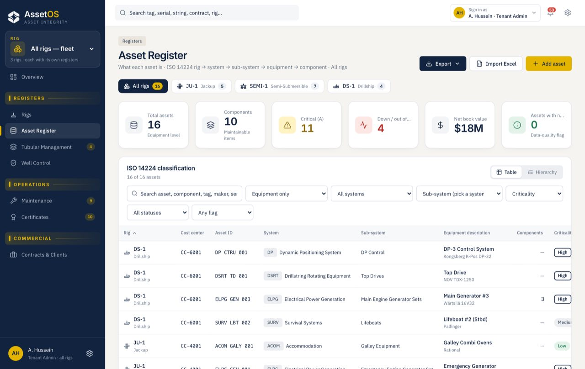
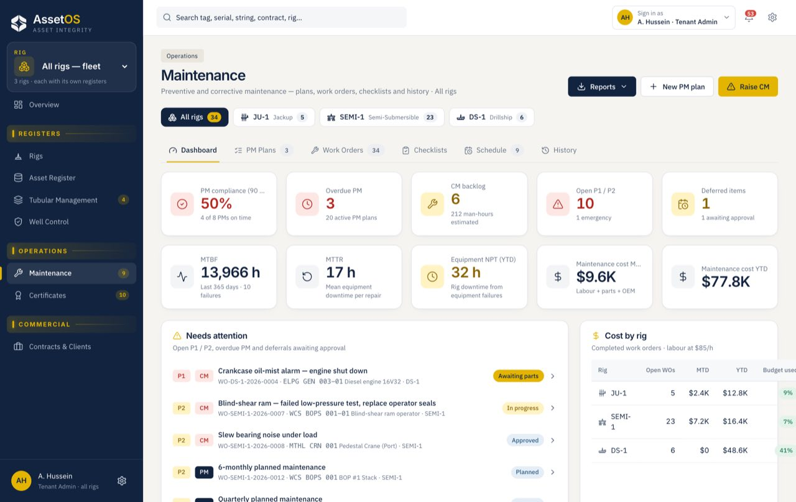
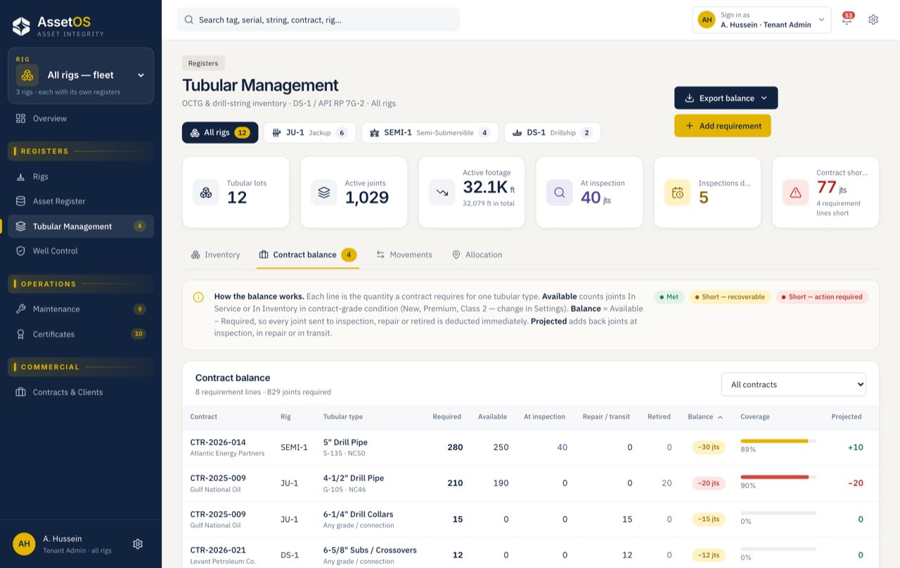
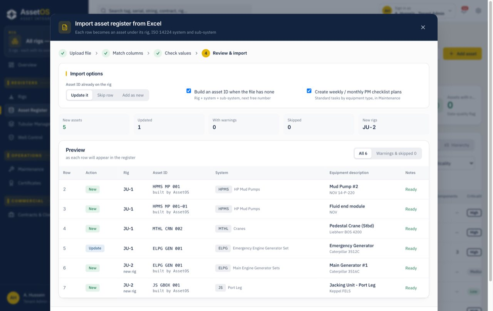
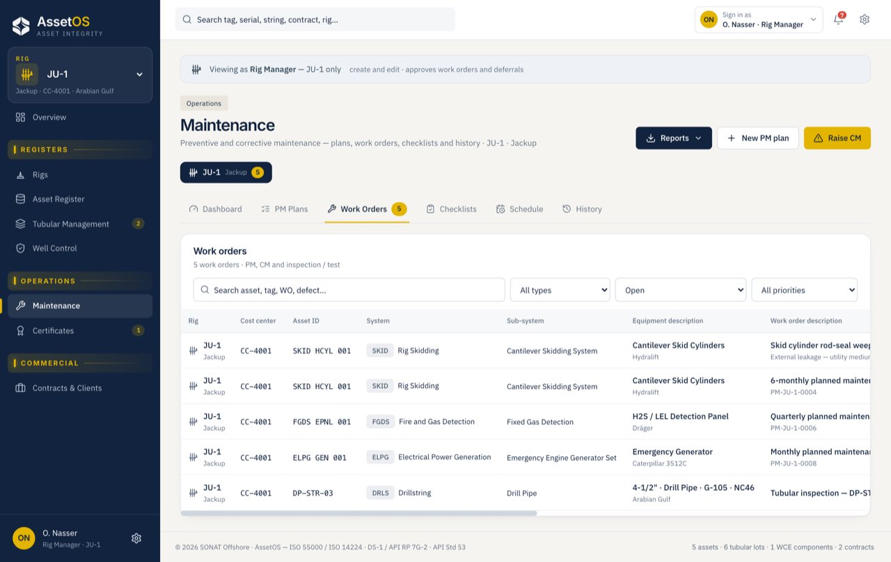

Asset register
Keep equipment, components, criticality and status connected to the rig they belong to.
Asset integrity · Maintenance · Offshore fleets
AssetOS connects equipment records, maintenance and integrity in one auditable platform for offshore fleets.
Bring the records crews maintain and the information managers need into one place, for each rig and across the fleet.
Keep equipment, components, criticality and status connected to the rig they belong to.
Plan preventive work, manage corrective jobs and track checklists through close-out.
Keep tubulars, well-control equipment and certificates visible with their related assets.
Follow maintenance performance and export reports for one rig or the full fleet.
Keep each step tied to the same rig, equipment and history—so the next action is clear.

Organize equipment, components, criticality and status in one rig-level register.

Connect PM plans, checklists and corrective jobs with their equipment history.

Keep tubulars, well-control equipment and certificates visible alongside maintenance.

Import an Excel or CSV register, review how the records map, then set up the system around your operation.
Agree the asset hierarchy, roles, approvals and reports.
Map equipment, maintenance plans and related records.
Give crews and shore teams access to their rigs.
Track work, review performance and export reports.
Set up each rig or production asset to match its equipment, operating structure and reporting needs.
Assign people to rigs and roles. Keep customer data separate, and maintain a history of changes and approvals.

Set up a rig, fixed platform or floating production unit as its own asset, with its own register and team.
Yes. AssetOS supports Excel and CSV registers. The records can be reviewed as they are mapped to your asset hierarchy before they are saved.
The asset hierarchy, tag format, maintenance routines, roles, approvals, fields and reports can be configured during onboarding.
Yes. A production platform can be set up as its own asset, with its own equipment register, maintenance records, certificates and reports.
Users are assigned roles and rig access. The permissions determine which records they can view or update, and changes are recorded in the audit history.
AssetOS uses an ISO 14224 hierarchy and supports the operating standards and reporting requirements agreed for each customer during configuration.
Choose a rig or platform to discuss. We’ll walk your team through the workflows and records that matter to you.